금속재료기사 (2022-04-24 기출문제)
1과목: 금속조직학
1. 오스포밍(ausforming)한 금속 조직에 대한 설명으로 틀린 것은?
- 소성가공의 불균일성 때문에 복잡하고 미소한 응력이 발생한다.
- 압연할 때는 압연방향으로 오스테나이트가 길게 된다.
- 오스테나이트 입계의 면적이 증가한다.
- 슬립선이 발생하지 않기 때문에 마텐자이트의 성장이 방해 받지 않는다.
(정답률: 62%)

2. 다음 중 순금속 주괴의 중심부에서 관찰될 수 있는 조직은?
- 주형칠
- 주상정
- 등축정
- 칠층
(정답률: 55%)
3. 알루미늄 금속이 응고할 때 결정이 우선 성장하는 방향은?
- [100]
- [101]
- [011]
- [111]
(정답률: 62%)
4. 다음 중 규칙격자가 불규칙격자와 비교하여 전기전도도가 큰 이유는?
- 풀림을 단시간에 처리하므로
- 고온에서 핵생성이 촉진되므로
- 전도전자의 산란이 적어지므로
- 불규칙격자의 상호치환이 활발하므로
(정답률: 72%)
5. 재결정 현상에 대한 설명으로 틀린 것은?
- 냉간가공의 변형량이 클수록 재결정 온도는 낮아진다.
- 일반적으로 순수한 금속에 가까울수록 재결정 온도는 높아진다.
- 냉간가공도가 커짐에 따라 핵발생속도의 증가량이 핵성장속도의 증가량보다 크다.
- 금속의 용융점이 높을수록 재결정 온도가 일반적으로 높다.
(정답률: 56%)
6. 다음 금속 결정구조 중 전연성이 가장 우수하고, 가공성이 뛰어난 것은?
- 면심입방구조
- 조밀육방구조
- 체심입방구조
- 단사입방구조
(정답률: 69%)
7. 다음 그림에서 빗금친 면의 Miller 지수는?
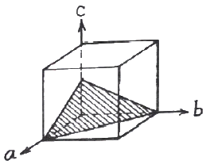
- (100)
- (112)
- (111)
- (110)
(정답률: 80%)
8. 다음 중 재결정이 일어난 금속에 대한 설명으로 틀린 것은?
- 재결정이 일어나면 인장강도가 감소한다.
- 재결정이 일어나면 탄성한도가 감소한다.
- 재결정이 일어나면 전기저항이 감소한다.
- 재결정이 일어나면 연신율이 감소한다.
(정답률: 61%)
9. Fe-Fe3C 상태도에서 0.2%C인 탄소강이 723℃ 선상에서의 초석 α와 austenite는 약 몇 % 인가? (단, 723℃에서의 탄소 고용한도는 0.8% 이며, α의 고용한도는 0.025% 이다.)
- α = 77.42%, austenite : 22.58%
- α = 22.58%, austenite : 77.42%
- α = 61.50%, austenite : 38.50%
- α = 38.50%, austenite : 61.50%
(정답률: 65%)
10. 다음은 순금속의 냉각 곡선이다. 융점에서 Gibbs의 상률을 적용한 자유도는? (단, 압력이 일정하다.)
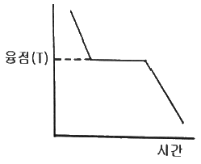
- 0
- 1
- 2
- 3
(정답률: 67%)
11. 다음 구조의 화학식은? (단, A원자는 각 면의 중심에 존재한다.)
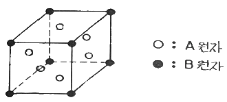
- A3B4
- A3B
- AB
- A2B
(정답률: 58%)
12. 단순입방격자에서 (110)면과 수직을 이루는 면은?
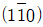
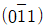
- (111)
- (100)
(정답률: 58%)
13. 다음 중 강자성 재료인 것은?
- 500℃의 순철
- 1000℃의 순철
- 1500℃의 순철
- 2000℃의 순철
(정답률: 65%)
14. BCC 결정구조의 버거스 벡터를 바르게 표시한 것은? (단, a는 격자 상수이다.)
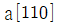
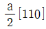
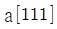
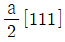
(정답률: 61%)
15. 그림과 같은 2성분계 상태도의 m점에서 일어나는 평형 반응은? (단, L1은 융액 Ⅰ , L2는 융액 Ⅱ 및 α는 고용체이다.)
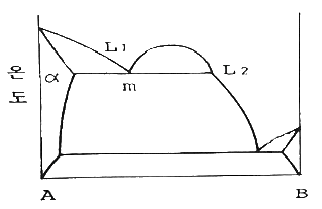
- 공정반응
- 편정반응
- 공석반응
- 편석반응
(정답률: 45%)
16. 금속간 화합물에 대한 설명으로 옳은 것은?
- 금속과 비금속이 결합한 화합물이다.
- 일반적으로 연하며 간단한 결정구조를 갖는다.
- 일반적으로 융점이 낮아 고온에서 분해되지 않는다.
- CuAl2 합금은 금속간화합물이다.
(정답률: 70%)
17. 냉간가공에 의해 일어나는 현상은?
- 결정의 이방성 발생
- 잔류응력의 감소
- 전위의 증가
- 인장강도의 감소
(정답률: 60%)
18. 다음 중 강의 TTT곡선에서 나타나는 상변태에 영향을 주는 인자와 가장 거리가 먼 것은?
- 탄소함량
- 결정구조
- 결정립도
- 합금원소
(정답률: 43%)
19. 고용체에서 규칙도(Degree of order)가 1인 것을 무엇이라 하는가?
- 반규칙 고용체
- 반불규칙 고용체
- 완전규칙 고용체
- 완전불규칙 고용체
(정답률: 78%)
20. 순철이 체심입방격자에서 면심입방격자로 변태하는 것은?
- 자기변태
- 상온변태
- 고온변태
- 동소변태
(정답률: 80%)
2과목: 금속재료학
21. 강의 담금질에 대한 설명으로 틀린 것은?
- 위험구역은 빨리 냉각하여 크랙 생성을 방지한다.
- 아공석강의 가열 온도는 약 A3 + 50℃ 이다.
- 임계구역을 빠르게 통과한 강의 조직은 마텐자이트이다.
- 탄소의 함량이 높을수록 Ms 온도는 낮아진다.
(정답률: 62%)
22. 베이나이트 변태에 관한 설명으로 옳은 것은?
- 약 550℃ 이하의 온도에서 항온변태시키면 베이나이트가 형성되기 시작한다.
- 상부 베이나이트는 하부 베이나이트보다 낮은 온도에서 생성된다.
- 베이나이트 형성은 페라이트 결정입계에서 핵의 형성이 시작된다.
- 베이나이트의 생성은 결정입 내부에서만 일어난다.
(정답률: 57%)
23. 다음 중 실용적 소수저장합금이 가져야할 성질이 아닌 것은?
- 수소의 흡수와 방출속도가 빠를 것
- 수소의 흡수와 방출 시 평형압력의 차가 클 것
- 상온근방에서 수 기압의 수소해리 평형압력을 가질 것
- 단위중량 및 단위체적당 수소 흡수와 방출량이 많을 것
(정답률: 65%)
24. 아연(Zn)의 특성에 대한 설명으로 틀린 것은?
- 융점은 약 420℃ 이다.
- 고온의 증기압이 높다.
- 상온에서 면심입방격자이다.
- 일반적으로 25℃에서 밀도는 약 7.13 g/cm3 이다.
(정답률: 59%)
25. 다음 중 티타늄 및 티타늄 합금에 대한 설명으로 틀린 것은?
- 일반적으로 α상, δ상 조직이 존재한다.
- 합금 성분 중 Al은 α상을 안정화하는 성분이다.
- 화학공업의 밸브나 펌프 부품, 항공기의 부품으로 사용된다.
- 순수한 티타늄의 용융점은 약 1940K 이다.
(정답률: 62%)
26. Lo-Ex 합금의 특징에 대한 설명으로 옳은 것은?
- 내마모성이 좋다.
- 열팽창 계수가 크다.
- 고온 강도가 낮다.
- 합금조성은 Al-12%Cu-1%Si-15%Mg-1.8%Ni 이다.
(정답률: 47%)
27. 분말야금법의 특징에 대한 설명으로 틀린 것은?
- 절삭공정을 생략할 수 있다.
- 다공질의 금속재료를 만들 수 있다.
- 용해법으로 만들 수 없는 합금을 만들 수 있다.
- 제조과정에서 융점 이상까지 온도를 올려야 한다.
(정답률: 69%)
28. Cu의 수소 취성에 대한 설명으로 틀린 것은?
- 생성되는 수증기가 원인이 되어 발생하는 취성이다.
- 정련동 중의 Cu2O를 제거하는 과정에서 생길 수 있다.
- 동을 전해액 중에서 정련할 때 수소 침입으로 생기는 취성이다.
- 동 중의 산소를 제거할 때 사용하는 환원성 수소 가스로 인해 발생하는 취성이다.
(정답률: 35%)
29. 오스테나이트계 스테인리스강의 품질을 감소시키는 현상은?
- 뜨임취화
- 입계부식
- 고온취화
- σ상 취화
(정답률: 72%)
30. 오스테나이트계 스테인리스강의 표면 미세 갈라짐을 검사하려고 할 때, 다음 중 가장 적합한 비파괴검사 방법은?
- 침투탐상검사
- 음향방출검사
- 자분탐상검사
- 초음파탐상검사
(정답률: 65%)
31. 40~50%Ni과 Fe의 합금으로 열팽창계수와 내식성이 우수하여 전구에 사용하는 것은?
- ESD
- Hiduminium
- Raffina
- Platinite
(정답률: 67%)
32. 금속의 강화기구 중 강도와 인성을 동시에 증가시키는데 효과적인 방법은?
- 고용강화
- 가공경화
- 분산강화
- 결정립 미세화강화
(정답률: 42%)
33. 다음 강재에 존재하는 비금속개재물 중에서 열간가공에 의해 가장 잘 연신되는 것은?
- 산화물
- 규화물
- 황화물
- 안정한 대형 탄질화물
(정답률: 43%)
34. 스프링강에서 담금질성을 높이고 탄성한도를 향상시키는 반면, 열처리 중에 탈탄을 촉진시켜서 표면경도의 저하를 유발하는 원소는?
- S
- W
- Mo
- Si
(정답률: 49%)
35. 레데뷰라이트 조직에 대한 설명으로 틀린 것은?
- 주철의 응고 시 생기는 공정조직이다.
- α와 Fe3C의 혼합물이다.
- 액상 철로부터 생성되는 조직이다.
- 생성온도는 약 1130℃ 이다.
(정답률: 61%)
36. 재료시험법 중 동적시험에 해당되는 것은?
- 인장시험
- 충격시험
- 전단시험
- 압축시험
(정답률: 63%)
37. 다음 조직 중 경도가 가장 높은 것에서 낮은 순으로 옳은 것은?
- 펄라이트＞마텐자이트＞베이나이트＞페라이트
- 마텐자이트＞펄라이트＞베이나이트＞페라이트
- 마텐자이트＞베이나이트＞펄라이트＞페라이트
- 마텐자이트＞펄라이트＞페라이트＞베이나이트
(정답률: 64%)
38. 다음 중 순철의 변태가 아닌 것은?
- A0
- A2
- A3
- A4
(정답률: 53%)
39. 납을 제조할 때 사용되는 습식 전해법은?
- Sinter법
- Betts법
- Rotary법
- Linz법
(정답률: 49%)
40. 절삭공구를 만들기에 가장 적합한 소재는?
- 내열합금
- 베어링강
- 초경합금
- 기계구조용강
(정답률: 77%)
3과목: 야금공학
41. 다음과 관련 있는 내용은?
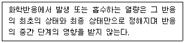
- Henry의 법칙
- Avogadro의 법칙
- Bragg의 법칙
- Hess의 법칙
(정답률: 52%)
42. 25g의 Cd와 75g의 Zn이 2원계 합금을 형성할 때, Cd의 몰분율은? (단, Cd의 원자량 : 112.41, Zn의 원자량 : 65.38)
- 0.828
- 0.222
- 0.162
- 1.147
(정답률: 44%)
43. 200K에서 ZnO2 = Zn + O2의 반응에 대한 평형 상수는 얼마인가? (단, 200K에서 △G° = 17330cal 이다.)
- 1.151×10-19
- -1.151×10-19
- 9.817×10-9
- -9.817×10-9
(정답률: 24%)
44. 노외 제련법 중 진공장치 또는 진공설비를 이용하는 제련법이 아닌 것은?
- LF법
- VOD법
- VAD법
- RH법
(정답률: 66%)
45. 25℃에서 10L의 이상기체를 1.5L까지 등온 가역적으로 압축하였을 때 주위로부터 2500cal의 일을 받았다. 이 기체는 약 몇 mole 인가?
- 1.1
- 2.2
- 3.5
- 4.8
(정답률: 56%)
46. 황 32kg을 완전 연소시키기 위하여 필요한 산소 가스의 양은 몇 kg 인가?
- 32
- 16
- 12
- 2
(정답률: 66%)
47. 온도와 압력이 일정한 닫힌 계에서 A에서 B로의 상태변화가 일어난다. 평형상태는 어느 에너지가 최소값을 가질 때 도달하는가?
- 엔탈피
- 내부에너지
- 깁스 자유에너지
- 헬름홀즈 자유에너지
(정답률: 68%)
48. 고로 가스의 성분이 다음과 같을 때, ㉠~㉢에 해당하는 가스의 명칭으로 옳은 것은?
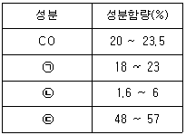
- ㉠ : CO2, ㉡ : N2, ㉢ : H2
- ㉠ : N2, ㉡ : CO2, ㉢ : H2
- ㉠ : N2, ㉡ : H2, ㉢ : CO2
- ㉠ : CO2, ㉡ : H2, ㉢ : N2
(정답률: 48%)
49. 1몰의 이상기체가 27℃에서 1기압으로부터 압축되어 10기압이 되었다. 이 과정이 비가역 등온 과정이면 일(w), 열(q), 내부에너지 변화(△U) 중 값이 항상 0 인 함수는?
- w
- q
- △U
- 모두 0이 아니다.
(정답률: 59%)
50. 다음에서 설명하는 법칙은?
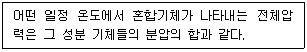
- 달톤의 분압법칙
- 반데르발스의 분압법칙
- 보일의 분압법칙
- 게이-루삭의 분압법칙
(정답률: 63%)
51. 엔드로피의 절대치를 구할 수 있는 근거를 제공하는 법칙은?
- 열역학 제0법칙
- 열역학 제1법칙
- 열역학 제2법칙
- 열역학 제3법칙
(정답률: 56%)
52. 보기와 같은 조건에서 금속 A의 융점은 약 몇 K 인가?
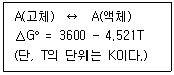
- 1211
- 885
- 796
- 1024
(정답률: 59%)
53. 맥스웰(Maxwell) 관계식 중 틀린 것은?
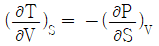
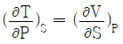
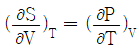
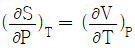
(정답률: 48%)
54. 금의 시안화침출 반응식으로 옳은 것은?
- 4Au + 8NaCN + 2H2O + O2 = 4[NaAu(CN)2] + 4NaOH
- 4Au + 8NaCN + 2H2O = 4[NaAu(CN)2] + 2NaOH + H2 + 2Na
- 2Au + 4NaCN + 2H2O + O2 = 2[NaAu(CN)2] + 2NaOH + H2O2
- 2Au + 4NaCN + 2H2O = 2[NaAu(CN)2] + 2NaOH + H2
(정답률: 49%)
55. 다음 중 내화도가 가장 높은 내화물은?
- 마그네시아
- 알루미나
- 실리카
- 포스테라이트
(정답률: 50%)
56. 125℃, 1몰의 수증기가 압력 20mmHg에서 0.50mmHg까지 등온 팽창할 때 깁스 자유에너지 변화 값(△G)은? (단, 수증기는 이상기체로 가정한다.)
- 0 J/mol
- -12206 J/mol
- 827.6 J/mol
- 12206 J/mol
(정답률: 47%)
57. 철강에 사용되는 탈산제 중 탈산력의 세기가 큰 것부터 순서대로 나열한 것은?
- Al＞Ca＞Mn＞Si
- Si＞Al＞Ca＞Mn
- Ca＞Al＞Si＞Mn
- Ca＞Si＞Al＞Mn
(정답률: 50%)
58. 내화물에 대한 설명으로 틀린 것은?
- SiO2는 산성 성분이다.
- 마그네시아는 염기성 내화물이다.
- 내화물은 열전도도가 커야 한다.
- 내화물은 SK 26 이상의 내화도를 가진 비금속 물질 또는 그 제품을 말한다.
(정답률: 66%)
59. 온도 1000K에서 A, B로 구성된 2성분계 규칙용액 중의 A의 활동도 계수가 0.12 일 때, 1200K에서 A의 활동도 계수는? (단, 1000K, 1200K에서의 A, B의 조성은 동일하다.)
- 0.14
- 0.17
- 0.21
- 0.23
(정답률: 31%)
60. 387.5℃에서 칼륨의 증기압은 3.25mmHg 이다. 같은 온도에서 칼륨의 몰분율이 0.5인 칼륨-수은 합금에서 칼륨의 증기압이 1.07mmHg 이었다면, 합금 내의 칼륨의 활동도 계수는? (단, 칼륨의 증기는 이상기체로 가정한다.)
- 0.6584
- 0.3292
- 0.2276
- 0.1125
(정답률: 41%)
4과목: 금속가공학
61. 취성파괴의 파괴양식에 대한 설명으로 옳은 것은?
- 컵앤콘 형상의 파단이 일어난다.
- 소성변형을 크게 하면서 균열의 속도가 매우 느리다.
- 유리와는 달리 금속의 경우는 전단며에서 파괴가 매우 빠르게 진행된다.
- BCC 구조를 갖는 금속이 큰 소성변형을 수반하지 않고 결정의 벽개면에서 파괴가 빠르게 발생한다.
(정답률: 47%)
62. 분산강화 및 석출강화에 대한 설명 중 틀린 것은?
- 금속기지 속에 미세하게 분산된 불용성 제2상으로 인하여 생기는 가와를 분산강화라 한다.
- 석출강화에서는 석출물이 모상과 비정합 계면을 만들 때 가장 효과가 크다.
- 석출입자에 의한 강화에서 석출물의 강도와 그 분포가 강도에 가장 큰 영향을 미친다.
- Orowan 기구는 과시효된 석출 경화형 합금의 강화기구를 설명하고 있다.
(정답률: 61%)
63. 단일 축 인장시험 시 항복강도를 σo라 할 때, 최대전단응력(τmax)로 옳은 것은? (단, Tresca의 항복조건을 고려한다.)
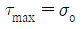
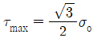
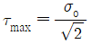
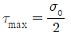
(정답률: 48%)
64. 길이 100mm, 폭 50mm, 두께 5mm인 철판을 폭은 변화시키지 않고 길이 방향으로 140mm까지 냉간압연 하면 판의 최종두께는 약 몇 mm 인가?
- 1.6
- 2.6
- 3.6
- 4.6
(정답률: 49%)
65. FCC 금속 결정에서 일어나는 교차 슬립(Cross Slip)에 대한 설명으로 옳은 것은?
- (111)면상에
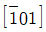
방향의 Burgers 벡터를 가진 나선전위선이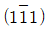
면으로 슬립할 수 있다. - (101)면상에
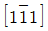
방향의 Burgers 벡터를 가진 칼날전위선이 (110)면으로 슬립할 수 있다. - (111)면상에 [001]방향의 Burgers 벡터를 가진 나선전위선이
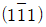
면으로 슬립할 수 있다. - (011)면상에 [111]방향의 Burgers 벡터를 가진 칼날전위선이 (110)면으로 슬립할 수 있다.
(정답률: 41%)
66. 고온크리프의 변형 기구에 해당되지 않는 것은?
- 전위의 상승
- 공공의 확산
- 쌍정의 발생
- 결정 입계의 미끄럼
(정답률: 60%)
67. 어느 방향으로 소성변형을 가한 재료에 역방향의 하중을 가하면 전과 같은 방향으로 하중을 가한 경우보다 소성변형에 대한 저항이 감소하는 현상은?
- 코트렐 효과
- 표피 효과
- 바우싱거 효과
- 변형 경화 효과
(정답률: 68%)
68. 원형의 깊은 모양을 한 제품을 만드는 가공방법으로 용기, 전등 갓 등의 제조가 가능하며 제품의 바깥면에 원형자국이 있는 가공법은?
- 관통 압출법
- 스피닝법
- 포트홀다이 압출법
- 만네스만 밀 방법
(정답률: 50%)
69. 취성 고체의 파괴가 표면 조건에 따라 민감하게 변하는 현상을 무엇이라 하는가?
- Joffe effect
- Bauschinger effect
- P-L effect
- Cottrell effect
(정답률: 67%)
70. 다결정체의 소성변형에 관한 설명으로 틀린 것은?
- 결정입계는 변형에 대한 저항 역할을 한다.
- 변형 후에 결정립들은 우선적인 방위로 배열하는 경향이 있다.
- 소성변형 기구는 slip, twin, kink 등이다.
- 결정립이 미세할수록 변형이 용이하다.
(정답률: 58%)
71. 금속 재료의 피로에 관한 설명 중 틀린 것은?
- 지름이 크면 피로 한도는 작아진다.
- 노치가 있는 시험편의 피로 한도는 크다.
- 표면이 거친 것이 고운 것보다 피로 한도가 작다.
- 노치가 없을 때와 있을 때의 피로 한도 비를 노치계수라 한다.
(정답률: 59%)
72. HCP에서 완전 전위의 Burger 벡터
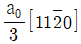
가 2개의 shockley 부분 전위로 분해되는 반응식으로 옳은 것은?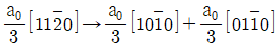
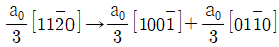
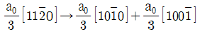
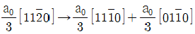
(정답률: 60%)
73. 다음 중 가공 경화에 대한 설명으로 옳은 것은?
- 재료에 외력을 가하면 변형되지 않는 현상이다.
- 가공된 재료를 가열하였다가 냉각시킬 때 발생하는 현상이다.
- 재료에 변형이 진행됨에 따라 강도와 경도가 증가하는 현상이다.
- 재료에 외력을 가하면 영구변형을 일으키는 현상이다.
(정답률: 68%)
74. 전위의 집적이 생기면 전위의 증식원(源)인 프랭크 리드(Frank Read)원에도 응력이 미치는 것은 무엇인가?
- 동적회복
- 시효응력
- 역응력
- 항복강하
(정답률: 60%)
75. FCC 격자에서 쌍정면과 쌍정방향으로 옳은 것은?
- 면 : (111), 방향 : [112]
- 면 : (112), 방향 : [111]
- 면 : (110), 방향 : [111]
- 면 : (110), 방향 : [112]
(정답률: 52%)
76. 연강의 인장 시험에서 넥킹(necking)현상은 어떤 강도에서 발생하기 시작하는가?
- 인장강도
- 파단강도
- 비례강도
- 탄성강도
(정답률: 39%)
77. 탄성계수(E)와 체적탄성계수(K)의 관계식으로 옳은 것은? (단, ν는 푸아송 비이다.)
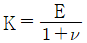
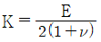
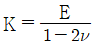
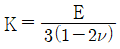
(정답률: 52%)
78. 가공경화 후 어닐링 시 재결정에 대한 설명으로 틀린 것은?
- 온도를 감소시키면 재결정에 필요한 어닐링 시간이 증가한다.
- 재결정을 일으키는데 최소한의 변형이 필요하다.
- 금속의 순도가 높아질수록 재결정온도는 증가한다.
- 변형 정도가 작을수록 재결정을 일이키는데 필요한 온도는 높아진다.
(정답률: 64%)
79. 단조작업 시 마지막 단계에 이르렀을 때 과잉의 금속이 금형 속으로부터 밀려나서 금속의 얇은 띠가 생기는 것은?
- 핫티어
- 플래시
- 플레이크
- 산화물랩
(정답률: 59%)
80. 연성-취성 천이온도에 미치는 영향에 대한 설명으로 옳은 것은?
- 강 중의 Mn, Ni은 천이온도를 높인다.
- 노치가 날카로울수록 천이온도는 낮아진다.
- 변형 속도가 작을수록 천이온도는 높아진다.
- 결정립의 크기가 클수록 천이온도는 높아진다.
(정답률: 48%)
5과목: 표면공학
81. 페러데이 법칙에 관한 설명으로 틀린 것은?
- 전기도금 시에 석출량은 전류에 비례한다.
- 전기도금 시에 석출량은 원자가에 비례한다.
- 전기도금 시에 석출량은 시간에 비례한다.
- 화학 당량을 페러데이로 나눈 값을 전기화학당량이라 한다.
(정답률: 56%)
82. 진공증착이 이루어지는 챔버(진공관) 내부의 진공도와 가장 가까운 범위는?
- 1~10 torr
- 10-1~10-2 torr
- 10-3~10-4 torr
- 10-5~10-6 torr
(정답률: 47%)
83. PVD법의 특징에 대한 설명으로 틀린 것은?
- 코팅층의 표면이 균일하다.
- 고순도의 코팅층을 얻을 수 있다.
- PVD법에는 진공증착, 음극스패터링, 이온플레이팅 등이 있다.
- 헬륨 가스가 가압된 상태에서 주입되어야하기 때문에 가스 비용이 많이 든다.
(정답률: 64%)
84. 다음 중 철강 기지에 용융도금하기 어려운 경우는?
- 몰리브덴 도금
- 아연 도금
- 알루미늄 도금
- 주석 도금
(정답률: 53%)
85. 다음 중 화학적 기상도금(CVD)법으로 제조하지 않는 박막은?
- Si3N4
- SiO2
- Cr23C6
- MoSi2
(정답률: 45%)
86. 공업적으로 쓰이고 있는 양극산화 방법이 아닌 것은?
- 황산법
- 옥살산법
- 크롬산법
- 염화칼륨법
(정답률: 50%)
87. 금속 제품에 사용하는 열처리 용어에 대한 설명이 틀린 것은? (단, KS를 기준으로 한다.)
- 가스 퀜칭은 금속 제품을 정해진 고온 상태로부터 산소로 냉각하는 처리이다.
- 표면 열처리는 금속 제품의 표면에 필요한 성질을 주기 위한 목적으로 하는 열처리이다.
- 분무 퀘칭은 금속 제품을 정해진 고온 상태로부터 물 등의 분무로 냉각하는 처리이다.
- 진공 침탄은 강 제품을 진공 노에서 감압한 침탄성 가스 중에서 가열하여 침탄하는 처리이다.
(정답률: 58%)
88. 화학증착법에 대한 설명으로 옳은 것은?
- 피복하고자 하는 증발된 금속을 이온화시켜 피복한다.
- 타켓 재료의 원자를 스퍼터(Sputter) 시켜 마주보는 기판 위에 피복한다.
- 금속용액에 기판을 침지하여 화학적으로 치환 도금한 것이다.
- 가열된 소재에 피복하고자 하는 피막성분을 포함한 원료의 혼합가스를 접촉시켜 증착한다.
(정답률: 46%)
89. 진공증착법과 비교한 음극 스퍼터링에 대한 설명으로 틀린 것은?
- 음극 스퍼터링은 전류량과 생성피막의 두께가 정비례하므로 두께 조절이 쉽다.
- 음극 스퍼터링은 진공증착법 보다 저진공에서 가능하다.
- 음극 스퍼터링은 스퍼터 입자의 수가 만항서 도금속도가 빠르다.
- 음극 스퍼터링은 튕겨진 입자가 큰 운동에너지를 가지고 있어서 막이 치밀하고 밀착도 좋다.
(정답률: 38%)
90. 다음 중 탈탄에 관한 설명으로 틀린 것은?
- 탈탄은 강이 고온에서 산화되면서 발생하는 현상이다.
- 표면에 금속 도금, 피복을 통해서 탈탄을 방지할 수 있다.
- 탈탄된 강재를 급랭 경화하면 탈탄 전의 강재보다 담금질 경도가 증가한다.
- 중성분위기에서 열처리를 하면 탈탄을 방지할 수 있다.
(정답률: 50%)
91. 주사전자현미경을 통한 시료의 분석에서 상호작용 부피에 관한 설명으로 틀린 것은?
- 산란단면은 가속전자 에너지의 제곱에 비례하여 증가한다.
- 상호작용 부피는 시편의 원자번호가 증가할수록 감소한다.
- 시료에 대한 입사빔의 각도가 직각에서 벗어남에 따라 상호작용 부피가 감소한다.
- 상호작용 부피는 시료 표면에서 탄성산란의 증가와 단위거리당 에너지 손실의 증가로 공 모양으로 나타난다.
(정답률: 44%)
92. 분위기 열처리에서 가스에 대한 설명으로 틀린 것은?
- 암모니아 가스는 탈탄성 가스이다.
- 질소 가스는 중성 가스이다.
- 메탄 가스는 침탄성 가스이다.
- 수증기는 산화성 가스이다.
(정답률: 52%)
93. 다음 중 강의 경화능에 영향을 미치는 인자와 가장 거리가 먼 것은?
- 탄소량
- 잔류응력
- 합금원소량
- 오스테나이트의 결정입도
(정답률: 50%)
94. 마텐자이트 조직이 경도가 높은 이유가 아닌 것은?
- 결정의 미세화
- 급랭으로 인한 내부 응력
- 탄소 원자에 의한 Fe 격자의 강화
- C의 확산 변태에 의한 전위, 쌍정 조직의 강화
(정답률: 58%)
95. 다음 중 침탄 후 담금질 시 담금질의 위한 가열 온도가 너무 낮거나, 냉각 속도가 너무 느릴 때 발생하기 쉬운 결함은?
- 박리
- 균열
- 탈탄
- 경도 불량
(정답률: 48%)
96. 다음 중 화성처리와 관련된 설명으로 가장 적절한 것은?
- 적당한 팽창계수를 가진 유리를 피복하는 것
- 금속 표면에 화학반응을 일으켜 물에 불용성인 화합물을 생성시켜 피복하는 것
- 유기물질인 도료를 이용하여 금속 표면을 피복하는 것
- 전해액을 통한 갈바닉 전류를 이용하여 피복하는 것
(정답률: 50%)
97. 다음 중 인산염 피막의 종류에 해당하지 않는 것은?
- 인산망각 피막
- 인산아연 피막
- 인산구리 피막
- 인산철 피막
(정답률: 42%)
98. 브래그 법칙이 다음과 같을 때, dhkl이 의미하는 것은?
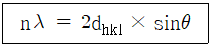
- 입사파의 파장
- 격자의 면간거리
- 격자면과 회절 X선 사이의 각도
- 회절빔의 주파수
(정답률: 64%)
99. 아노다이징 과정에서 Sealing 처리와 관계없는 것은?
- 수증기
- 고진공
- 봉공처리
- 알루미늄 착색 유지
(정답률: 52%)
100. 고속도 도금을 하기 위한 방법이 아닌 것은?
- 금속이온의 농도를 크게 한다.
- 확산정수가 작은 염을 사용한다.
- 액의 온도를 높여 작업한다.
- 액의 교반을 심하게 해준다.
(정답률: 56%)